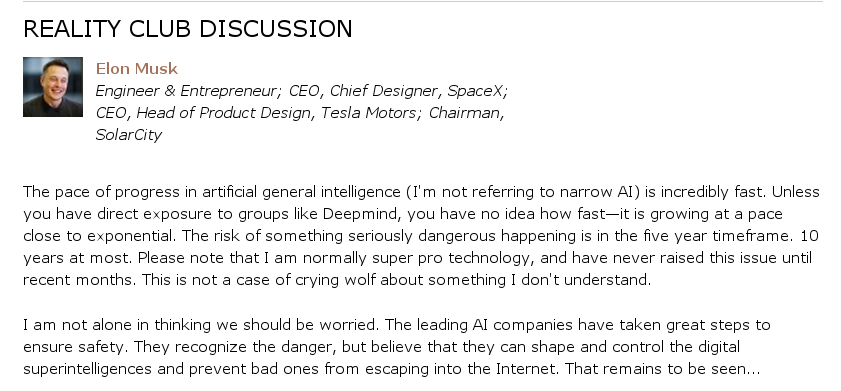
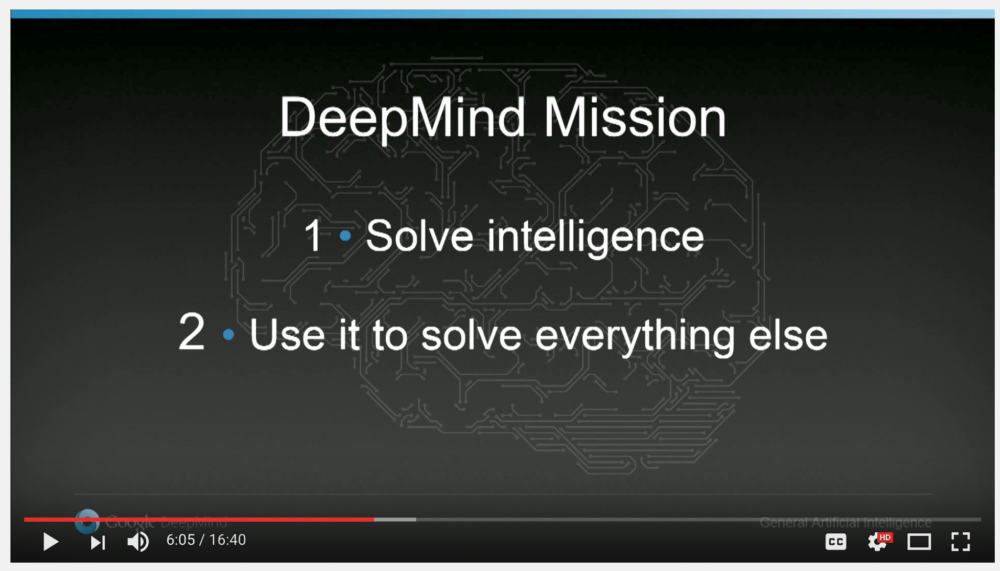
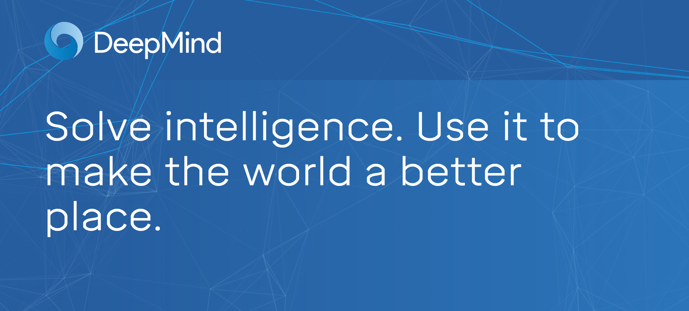

So, I'm a newcomer to machine learning and these days I learn best by targeted and self-directed creativity and curiostiy over more traditional methods. In the spirit of Wait But Why which got me interested in this topic in the first place, I'm trying something new with my learning where I document my curiosity via creativity and publish it on the web for others who had the same questions I did.
Here goes nothing.
The fundamental curiosities I have with regards to AI are not with bayesian classifiers, better content recommendation systems, or chasing concepts with mysterious sounding names but rather with the technical underpinnings, timeline, and safety discussions surrounding the inception of artificial general intelligence as well as the risks posed by the portability of other powerful AI algorithms. Initially I became interested in this after reading the somewhat well known article on WaitButWhy which, while it has received warranted criticism, has successfully introduced a lot more people to the topic (hopefully for the better).
The article prompted me to read Superintelligence: Paths, Dangers, Strategies by Nick Bostrom along with some of his other existential crisis catalysts.
Since then I've tried to keep up with the trajectory of the field because, as an intelligent agent myself, I rather instinctively desire to forcast the future states my environment will be in. However, up until this point, I've been merely aggregating the opinions of others, such as this deleted comment:
And this complementary expert opinion:
“Elon is one of the smartest people out there, and amazing to talk to,” Hassabis responds, neutrally. “And I actually think it’s pretty cool people like him are getting so into AI because it just shows what a big deal it is.” He remains diplomatic, but it evidently irritates him that scientists from other areas feel at liberty to pronounce publicly on AI: you don’t hear him pontificating about particle physics, after all.
“In general, I’ve found that people who don’t actually work on AI don’t fully understand it. They often haven’t talked to many AI experts, so their thought experiments are running away with themselves because they’re based on what I think are going to turn out to be incorrect assumptions.”
— Demis Hassabis, founder, DeepMind
Demis describes DeepMind as a sort of Apollo program for artificial general intelligence with over 100 talented PhDs gathered to conduct the research — notably without the labyrinthine bureaucracies and chores present in academia. In 2015 Demis stated that DeepMind's mission was thus:
However, since then, it's changed to the more indefinite:
So this leaves me wondering why it was changed. It could be that we are so very far away that this mission would be like Kennedy proclaiming that we go to Mars in the 60's. Or it could be that Google/DeepMind does not want the rest of the world/company feeling that our work is realtively ephemeral like so:
Suppose you had to build a new subway line, and it was this grand trans-generational enterprise that humanity was engaged in, and everybody had a little role,” he told me. “So you have a little shovel. But if you know that a giant bulldozer will arrive on the scene tomorrow, then does it really make sense to spend your time today digging the big hole with your shovel? Maybe there is something else you could do with your time. Maybe you could put up a signpost for the great shovel, so it will start digging in the right place.
— Nick Bostrom in an interview with The New Yorker
For now I think it's probably some of both.
Unlike Bostrom and Hassabis, there is an archetypal academic viewpoint that's devoid of anxiety such as that of Andrew Ng, one of the most well known researchers in the field:
Immediately before this description of the non-virtuous circle of AI, Andrew articultes the virtuous circle of AI which precisely descibes the sector of AI that I'm not interested in. While I concede that there does seem to be some of deliberate "non-virtuous" activity going on, it seems foolish to completely disregard what is certainly possible long term regardless of the simplicity of our current algorithms.
Even though these experts say that AGI is still decades away, it's still not a matter of if but when and how. Futhermore, sentience is not essential for AI agents to be dangerous. For example, by simply making algorithms, computational resources, and perhaps robotic components accessible, a bad actor could construct an autonimous terror agent. We can hardly control who gets on a plane or can obtain a gun, let alone who can write computer programs and access the internet.
It reminds me of this quote from The Signal And The Noise by Nate Silver:
“Human beings have an extraordinary capacity to ignore risks that threaten their livelihood, as though this will make them go away.”
Then, with AGI, it doesn't really matter how far it seems we are away from general intelligence based on how little we understand the brain and how simple our algorithms seem relative to its complexity. Fundamentally it's just a reinforcement learning agent in a complex environment. We're going to get there eventually unless technological progress is interrupted.
So my question fundamentally is, precisely where are we, and how far do we have to go? I want to have some basis for forming my own opinion from the science alone instead of the high level opinions of experts.
With my current limited exposure to the field it seems to me that the best place to start in answering this question is by fully understanding DeepMind's Playing Atari with Deep Reinforcement Learning paper.
So, here goes.
My fundamental question I had going into this was the following: how generic is this algorithm? Could it easily be scaled to work with other kinds of tensors — textual, etc.
Here is the published on February 26th 2015. It was featured on the cover of Nature:

Here is a video demonstration:
And here is the code.